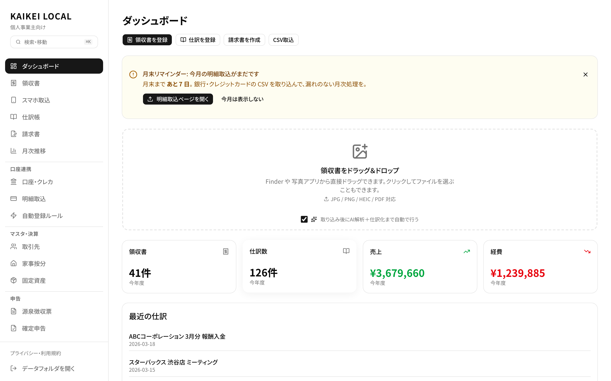
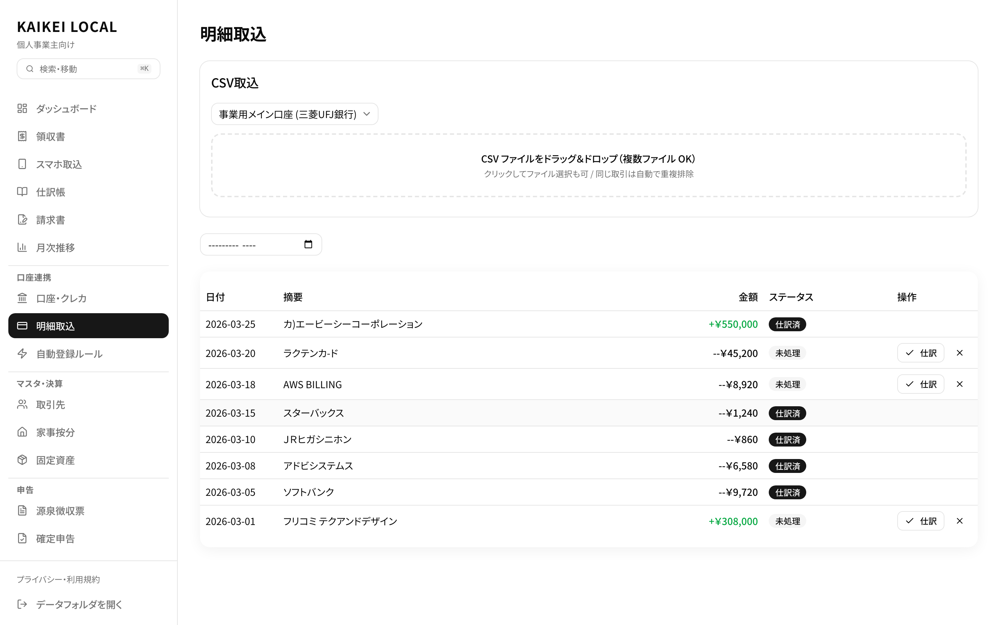
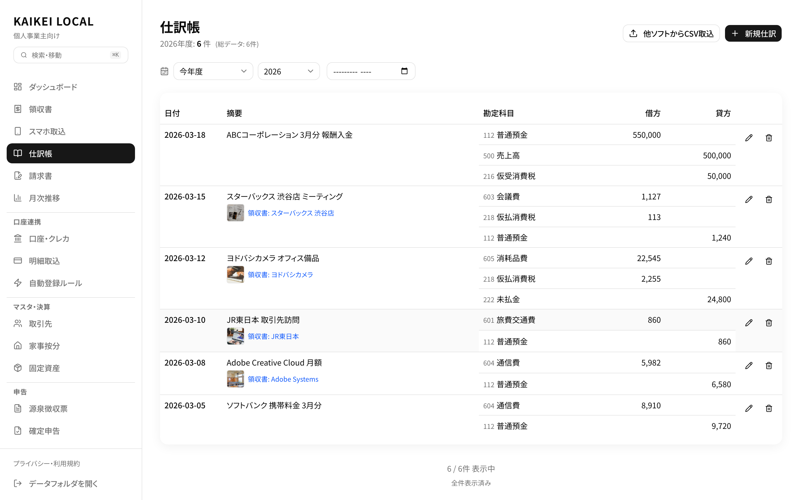
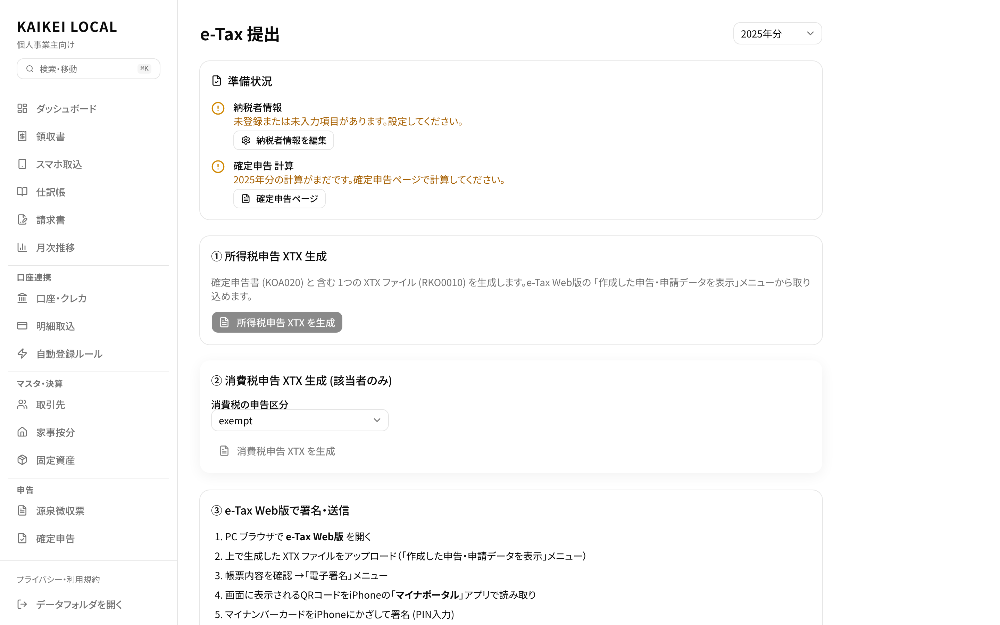
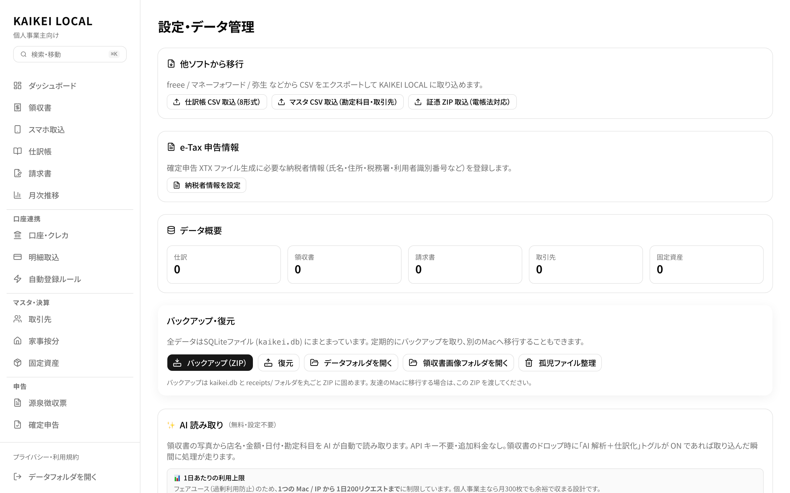
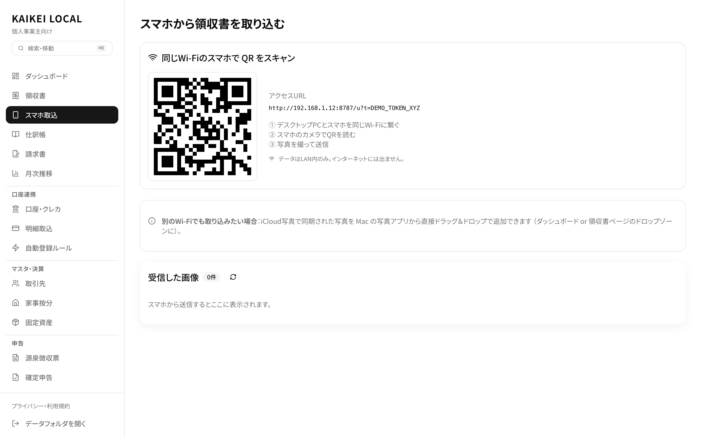
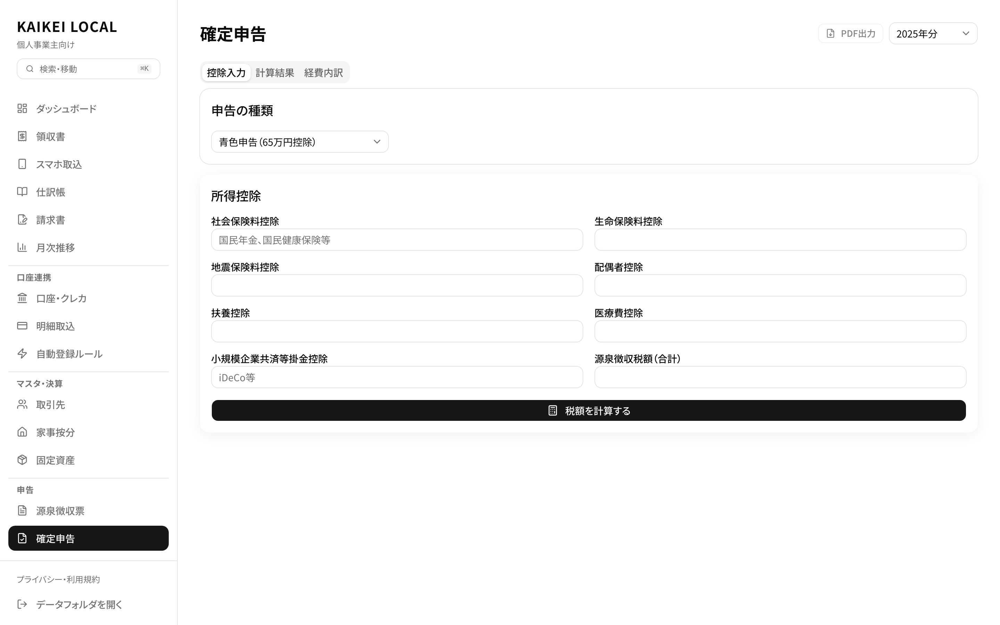
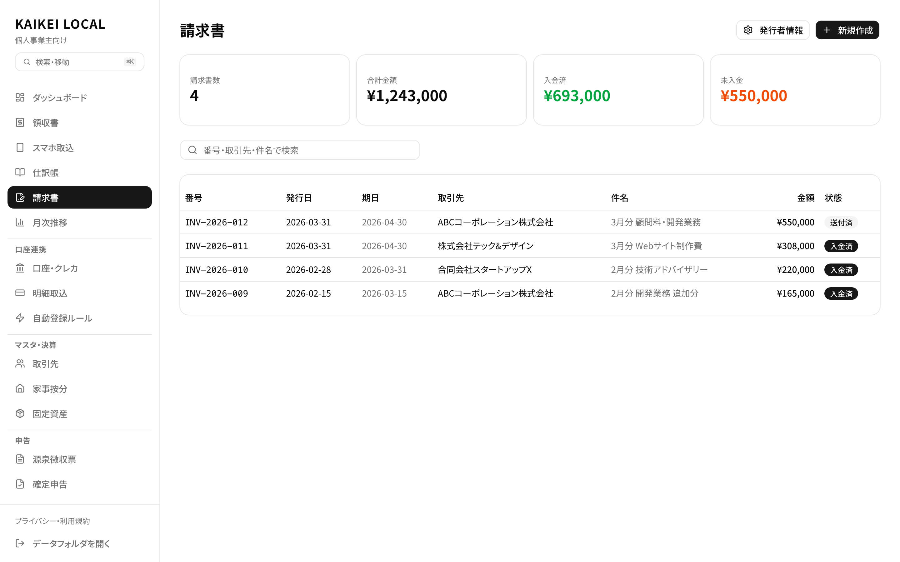

データは全てあなたのMacに。クラウドに一切送信しない、完全オフラインの会計アプリ。仕訳・領収書・青色申告・e-Tax XTX 出力まで、ずっと無料で使えます。

銀行・カードの CSV を入れるところから e-Tax 用 XTX ファイル生成まで、全部 Mac の中で完結。
クラウドに一切データを送りません。
みずほ・三菱UFJ・住信SBI など主要 30+ 行 / カード 11 社の CSV を自動判別。Shift_JIS でも UTF-8 でも、ヘッダの形式を見て勝手に直してくれます。

取引内容と過去のルールから勘定科目を推測。「Apple」→ 通信費、「JR」→ 旅費交通費 のように、使うほど精度が上がる学習型エンジン。

所得税申告 (RKO0010) と消費税申告 (RSH0010) の XTX を直接生成。e-Tax マイページの「データ内容確認」で実際にパース・帳票表示まで通ることを確認済み。

freee や マネーフォワードのようなクラウドサービスとは、設計思想がまるで違います。
SQLite ファイルとしてローカルに保存。クラウドに送信しないので、サービス停止・データ漏洩・規約変更でデータが消えることがありません。
仕訳から青色申告決算書、e-Tax XTX 出力まで全部無料。月額 1,000 円 × 数年というクラウドの累積コストがかかりません。
Tauri ベースの 32MB ネイティブアプリ。Web アプリのようなページ遷移待ちがなく、オフラインでも瞬時に開く。M1/M2/M3/M4 にネイティブ対応。
外国籍の個人事業主・フリーランスの方も、日本での確定申告 (e-Tax) に対応した会計データを KAIKEI LOCAL で生成できます。利用者識別番号は税務署で英語フォーム提出可能です。
Foreign residents running their own business or freelancing in Japan can use KAIKEI LOCAL to prepare their personal income tax return. The app generates standard e-Tax XTX files (RKO0010 / RSH0010) accepted by the National Tax Agency — same format used by Japanese citizens.
青色申告 65 万円控除に必要な複式簿記から、インボイス対応の請求書発行まで。
仕訳、領収書、請求書...全てMacのローカルに保存。クラウドへのデータ送信は一切なし。あなたの財務データは、あなただけのもの。

仕訳・領収書管理・青色申告決算書・所得税/消費税計算・e-Tax 用 XTX 出力まで、すべて無料で利用可能。サブスクも買い切り料金もありません。
アプリが表示するQRコードをスマホで読み取り、写真を撮って送信。同じWi-Fi内でLAN完結。スマホ側のアプリインストールは不要です。

複式簿記の仕訳帳、月次推移の損益計算書・貸借対照表、家事按分、固定資産台帳、減価償却まで。e-Tax 提出に対応した青色申告決算書を生成。

銀行・クレカのCSVを取り込むと、登録したルールで勘定科目を自動推測。「Apple→通信費」のように使うほど正答率が上がる学習型エンジン。
登録番号・税率ごとの税額計算に対応した PDF を出力。取引先マスタ連携、源泉徴収にも対応。発注書・領収書も同じテンプレート系で発行可能。

青色申告ができる主要サービスとの、ざっくりした比較です。
各社の最新の料金は公式サイトでご確認ください。
| KAIKEI LOCAL | freee 会計 スターター |
マネーフォワード クラウド確定申告 ミニ |
弥生 青色申告 オンライン |
|
|---|---|---|---|---|
| 年間コスト | ¥0 サブスクなし |
約 ¥14,000〜※1 | 約 ¥10,800〜※2 | 約 ¥10,800〜※3 |
| データ保存先 | ローカル (Mac) | クラウド | クラウド | クラウド |
| オフライン利用 | 可能 | 不可 | 不可 | 不可 |
| 青色申告 65万円控除 | 対応 | 対応 | 対応 | 対応 |
| e-Tax XTX 直接出力 | 対応 | 対応 | 対応 | 対応 |
| 請求書発行 (インボイス) | 対応 | 対応 | 対応 | 別アプリ |
| 銀行 API 自動連携 | CSV 手動取込 | 対応 | 対応 | 対応 |
| アプリ形式 | Mac ネイティブ (32MB) | Web | Web | Web |
| ソースコード | 公開 | 非公開 | 非公開 | 非公開 |
※1 freee 会計 個人スターター: 年払い ¥11,760 + 税。月払いは年換算で約 ¥17,760 相当 (2026年4月時点 公式サイト調べ)
※2 マネーフォワード クラウド確定申告 パーソナルミニ: 年払い ¥10,800 + 税 (2026年4月時点 公式サイト調べ)
※3 弥生 青色申告オンライン セルフプラン: 年 ¥10,300 + 税 (初年度無料、次年度以降。2026年4月時点 公式サイト調べ)
銀行 API 自動連携は KAIKEI LOCAL では実装していません (ローカル設計のためスクレイピング/Aggregator 連携と相性が悪い) 。CSV 自動取込で代替しています。
各銀行・カード会社が発行する CSV を自動判別してインポート。未対応の銀行でも、
標準的なヘッダ (日付/摘要/入金/出金/残高) なら汎用パーサで取り込めます。
※ 上記の銀行名・カード名は各社の商標です。KAIKEI LOCAL は各社と提携していません。
対応追加のご要望は k.nagasawa.pc@gmail.com までご連絡ください。
財務データを預ける以上、信頼の根拠は明示しておくべきだと考えています。
仕訳・領収書・請求書・確定申告データはすべて Mac のローカル SQLite ファイルに保存。クラウドへのバックアップ送信も一切ありません。
~/Library/Application Support/dev.kaikei.app/ にファイルとして存在。バックアップの ZIP 化、Finder からの直接アクセス、他 Mac への移行も自由。
アプリ起動時に DB を snapshots/ に自動保存。直近 7 日分保持。復元時も自動で pre-restore スナップショットを作成するので、失敗時に安全に戻せます。
GitHub で全コードを公開。データの取り扱いも第三者が検証可能。隠れた外部送信はありません。
AI 読み取り機能の画像送信は初回利用時に明示同意ダイアログを表示。送信先・内容・保存ポリシーを開示。同意しない場合はオフライン OCR が自動で動作。
令和 7 年分 (2025 年分) の所得税申告 XTX は e-Tax マイページの「データ内容確認」機能でパース・帳票表示まで通過確認済み。
軽量 32MB のアプリ。インストールしてすぐに使い始められます。